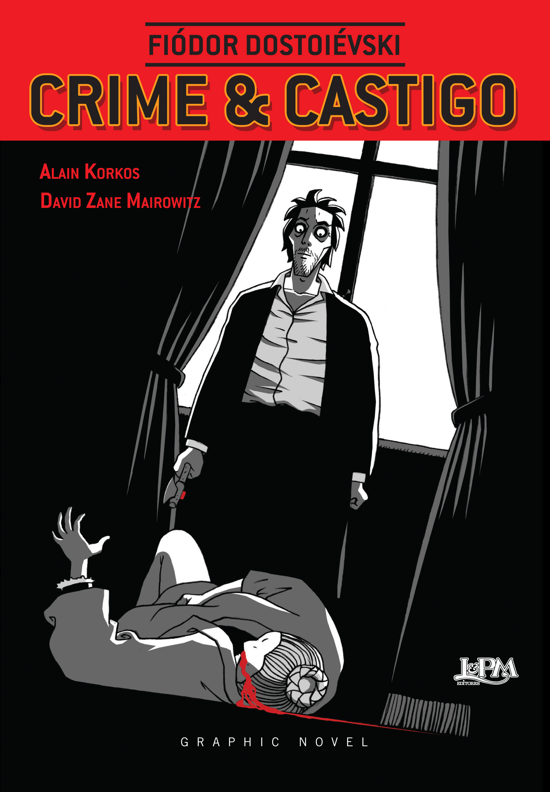
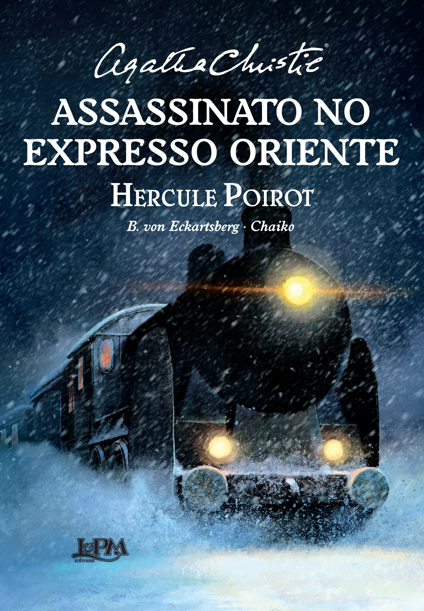
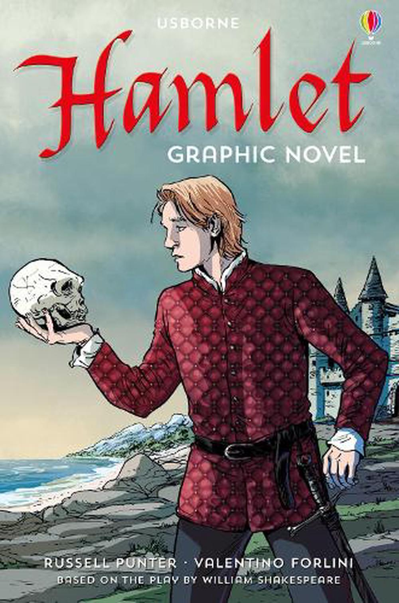
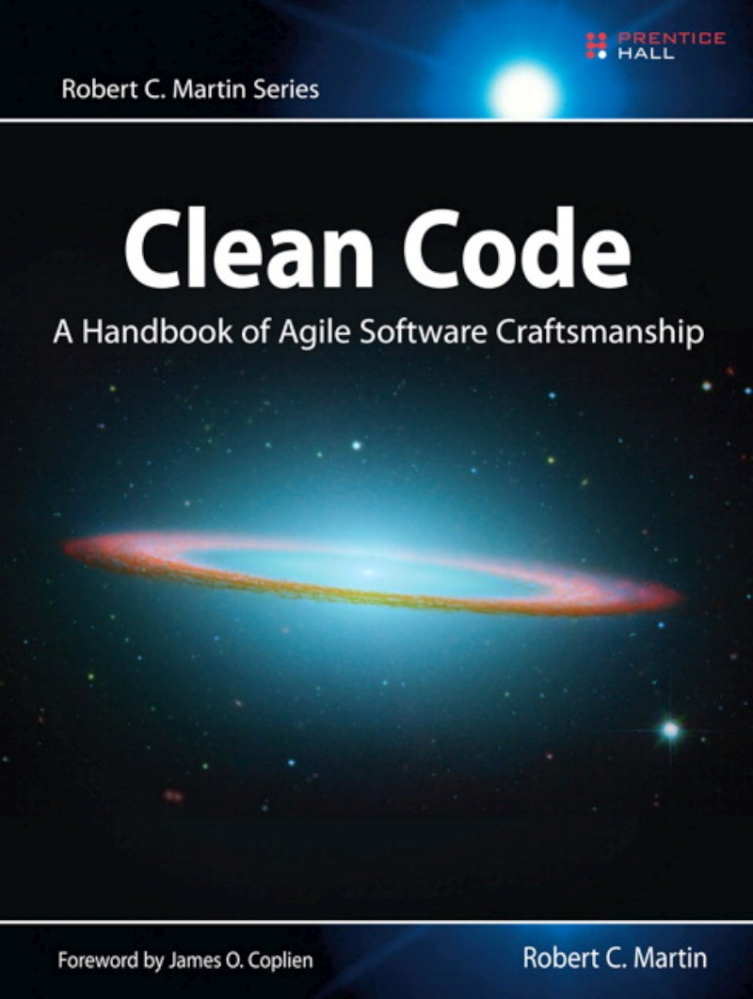

Crime e Castigo
Um dos maiores romances já escritos, Crime e Castigo explora as profundezas da psique humana.
Assassinato no Expresso do Oriente
Um clássico de Agatha Christie, repleto de mistérios e reviravoltas em um luxuoso trem transcontinental.
Hamlet
A tragédia de Shakespeare que explora temas de vingança, loucura e a complexidade da natureza humana.
Código Limpo
Um guia clássico para escrever código mais legível, sustentável e eficiente por Robert C. Martin.
Cristianismo Puro e Simples
Uma introdução clara e acessível à fé cristã por C.S. Lewis.
Memórias póstumas de Brás Cubas
Um romance repleto de digressões fisiológicas, retrata a realidade do Brasil no século XIX, por Machado de Assis .